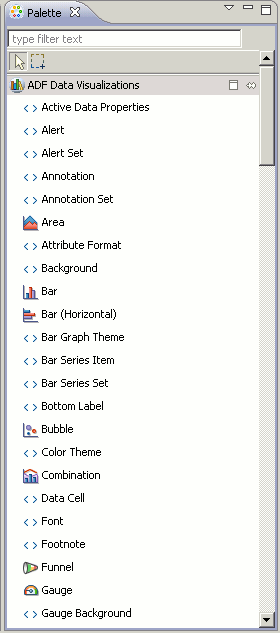

Oracle ADF Tools
OEPE provides a set of plugins for the Eclipse IDE designed to create, configure, and
run Oracle Application Development Framework (ADF) applications.
This document contains the following sections:
About Oracle ADF Faces
ADF Faces rich client (known also as ADF Faces) is a set of JavaServer Faces (JSF)
components that include built-in Asynchronous JavaScript and XML (AJAX) functionality.
While AJAX brings rich client-like functionality to browser-based applications, using JSF
provides server-side control, which reduces the amount of JavaScript code that application
developers need to write in order to implement AJAX-based applications.
In addition to providing a rich set of JSF components, the ADF Faces rich client framework
(RCF) provides a client-side programming model familiar to developers accustomed to the JSF
development model.
For more information on Oracle ADF Faces, see the
"Introduction to ADF Faces Rich Client"
chapter in the Oracle Fusion Middleware Web User Interface Developer's Guide for
Oracle Application Development Framework.
About ADF Configuration Files
A JSF web application requires a specific set of configuration files, namely, web.xml and faces-config.xml. ADF applications also store configuration information in the adf-config.xml and adf-settings.xml files. Because ADF Faces shares the same code base with MyFaces Trinidad, a JSF application that uses ADF Faces components for the UI also must include a trinidad-config.xml file, and optionally a trinidad-skins.xml file.
For more information on ADF Faces configuration files, see the "ADF Faces Configuration" appendix in the Oracle Fusion Middleware Web User Interface Developer's Guide for Oracle Application Development Framework.
About ADF Data Visualization Components
The ADF Data Visualization components provide significant graphical and tabular capabilities for displaying and analyzing data, and support the use of ADF data controls.
For more information regarding ADF Data Visualization Components, see the "Introduction to ADF Data Visualization Components" chapter in the Oracle Fusion Middleware Web User Interface Developer's Guide for Oracle Application Development Framework.
Creating an Oracle ADF Application
To create an ADF application:
- From the main menu, select File > New > Oracle ADF Application.
- In the New Oracle ADF Application dialog, enter the following details:
- Application name
- Application project location (
<user_home>/workspace by default)
- Dynamic web project name (Default: "
Web" appended to application name)
- In the New Oracle ADF Application dialog, click New Runtime to set
the WebLogic Runtime environment.
- In the New Server Runtime Environment wizard, select Oracle | Oracle Weblogic Server 11gR1 PatchSet 3, and click Next.
- On the Oracle WebLogic Server 11gR1 PatchSet 3 page, click the Browse icon next to the WebLogic home field.
- In the Browse for Folder dialog, select the location of your WebLogic Server 10.3.4 installation, and click OK.
- On the "Define a WebLogic Runtime" page, under Server Extensions, check to see that Oracle ADF runtime 11.1.1.4.0 has been installed. If not, click Install and follow the instructions. If ADF is installed, click Finish.
- In the New Oracle ADF Application dialog, click Add project to working sets if you would like to include the current project in a working set. Select an existing working set from the Working sets menu or create a new one.
- Click Finish.
Two projects are created in the Project Explorer - an EAR project and a dynamic web project.
Configuring Oracle WebLogic Server
Before starting to create your pages, you need to create a server configuration for Oracle WebLogic Server (WLS). It will be the link to the WLS instance that will be used to run the project.
To configure WebLogic Server:
- From the main menu, select Window > Show View > Other.
- In the Show View dialog, select Server > Servers to open the Servers pane.
- In the Servers pane, right-click and select New > Server.
- In the Define a New Server wizard, select Oracle WebLogic Server 11gR1 PatchSet 3, and click Next.
- In the "Specify a WebLogic domain directory" page on the Define a New Server wizard, in the Domain directory field, click Browse to select an already existing domain or click Create to create a new domain.
Note: Alternatively, you can click Launch Domain Configuration Wizard to create a new domain using the WLS Domain Configuration Wizard.
- In the New WebLogic Domain dialog, specify a name and a location for the domain. Optionally, you can specify a new password (the default is
welcome1). Under Extensions, select Oracle JRF - 11.1.1.0.
- Click Finish.
- On the New Server wizard, the Domain directory field is now populated. Click Next.
- On the Add and Remove page, in the Available list, select your application. Then click Add to shuttle the selection to the Configured pane. This associates your application with the newly created domain.
- Click Finish.
The new server connection appears in the Servers pane. Note that the server is a in stopped state.
Creating a Managed Bean
A managed bean is required to bind bean properties and business logic to the user interface components of the JSP.
To create a managed bean:
- In your dynamic web project, expand the Faces Configuration node and right-click Managed Beans.
In the context menu, select New Managed Bean.
- In the New Managed Bean dialog, select Using an existing Java class if you want to use an existing class as managed bean type, and specify the qualified class name. To create a new class, select Create a new Java class.
- On the Java Class page of the New Managed Bean wizard, specify the package name and class name, as well as any other class properties you want to specify. Click Next.
- On the Managed Bean configuration page, set properties for the managed bean, and click Next.
- On the Wizard Summarys page, review the properties of the managed bean, and click Finish.
The managed bean you created is now visible under Managed Beans under the Faces Configuration node in the Project Explorer. The Java class associated with the managed bean is listed under the Java Resources node.
Working with ADF tags in JSP Pages
To create a JSP page:
- In the Project Explorer, In your dynamic web project, right-click the WebContent node, and select New > JSP File. Alternatively, from the main menu, click New > Other, and choose JSP File under the Web node.
- In the New JSP File dialog, enter or select the parent folder, and enter a file name, for example,
login.jspx, in the File name field. Then click Next.
- On the Select JSP Template page, select a template and view the statements generated for it in the Preview pane. A variety of JSP templates are available for JSP, JSF, and ADF
development. For ADF applications, you will need to select a JSP template that supports XML style syntax, for example, New ADF Rich Faces Page - Basic (xhtml, xml syntax).
- Optionally, you can click the JSP Templates link at the bottom to customize existing templates or create new ones.
- Click Next. The page opens in the Web Page Editor.
Support for ADF Components in the Palette
The Palette pane displays all the available library components. You can click on an item in the palette to expand it.
The ADF Data Visualizations node shows all the GUI components available to represent data, for example, Bars, Pies, or Gauges. You can drag an item from the Palette and drop it on the JSP page. The following figure shows the ADF Data Visualizations node in the Palette.

The last item in the Palette is the Data Palette. Expand it to see content related to the available variables. Variables displayed in the Data Palette range from local Page Variables declared within the current JSP page to JSF Managed Beans available to the whole application. The Data Palette enables easy navigation to variable and class declarations as well as Drag and Drop onto the page.
To set properties for ADF components using the tag drop editor:
- Select an ADF Faces component in the Palette, for example, Form.
- Drag the selected component and drop it on to your JSP file.
- In the dialog that opens, set properties for the ADF component. For example, if you dropped the Form tag, you can specify the type of form to create, as well as select properties that will be used as form fields.
Note: Some tags may not render correctly; rendering support for these will be added in a future release.
Using the Smart Editor for ADF Components
The Properties pane provides a smart editor for ADF components where you can review and update the properties of ADF tags and attributes.
To use the smart editor for an ADF component:
- Click an ADF component, for example, af:form, either in the source view or design view of the JSPX file.
- Click the Properties pane.
- In the Properties pane, you click any of the property categories, and review or update the attributes. For example, if you are viewing the properties for the
af:form tag, you can click Common and edit the Id attribute. If you want to view all attributes together, click All.
- You can click on a hyperlinked field to open its value in the editor.
- For documentation on a particular tag, press F1 from within the Properties pane.
Using AppXray for ADF Components
AppXRay is a central feature of Oracle Enterprise Pack for Eclipse designed for dependency tracking, validation, and visualization. In this release of OEPE, AppXray is enabled for ADF components as well.
Some of the code editor features that are driven by AppXray are:
- Hovering over a component displays the properties of the component. For example, if you hover a managed bean, its properties (Name, Type, and Scope) are displayed.
- Hovering over a component and pressing Ctrl + Space displays a popup with possible code values.
- Hovering over a component and pressing Ctrl results in a hyperlink that leads you to the tag documentation.
To use AppXaminer to view dependency relationships:
- In the Project Explorer, right-click any file in your application, for example, login.jspx, and select Show AppXray Dependencies from context.
- AppXaminer opens in the Editor displaying the relationship the selected page has with other components. Numeric values indicate the number of references a component has with another.
- Expand a node to the relationship it has with other components.
- Right-click a node and select Show Reference Detail from context, which invokes a popup window displaying the detailed components involved. Alternatively, select Open from the context menu to view the file in the editor.
Running an ADF Application
To run an ADF application:
- Right-click the page you want to run, for example, login.jspx, and select Run As > Run on Server.
- In the Run on Server dialog, select Choose an existing server if you already have a valid server connection to WLS 10.3.4. If you do not have an existing valid server configuration, select Manually define a new server and follow the instructions.
To know more about support for Oracle ADF in OEPE, please see the Developing an Oracle ADF application with Oracle Enterprise Pack for Eclipse (OEPE) tutorial.